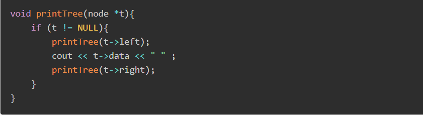

Cấu trúc dữ liệu cây là gì?
Cấu trúc dữ liệu cây biểu diễn các nút (node) được kết nối bởi các cạnh. Chúng ta sẽ tìm hiểu về Cây nhị phân (Binary Tree) và Cây tìm kiếm nhị phân (Binary Search Tree) trong phần này.
Cây nhị phân là một cấu trúc dữ liệu đặc biệt được sử dụng cho mục đích lưu trữ dữ liệu. Một cây nhị phân có một điều kiện đặc biệt là mỗi nút có thể có tối đa hai nút con. Một cây nhị phân tận dụng lợi thế của hai kiểu cấu trúc dữ liệu: một mảng đã sắp thứ tự và một danh sách liên kết (Linked List), do đó việc tìm kiếm sẽ nhanh như trong mảng đã sắp thứ tự và các thao tác chèn và xóa cũng sẽ nhanh bằng trong Linked List.
Các khái niệm cơ bản về cây nhị phân
Dưới đây là một số khái niệm quan trọng liên quan tới cây nhị phân:
- Đường : là một dãy các nút cùng với các cạnh của một cây.
- Nút gốc (Root) : nút trên cùng của cây được gọi là nút gốc. Một cây sẽ chỉ có một nút gốc và một đường xuất phát từ nút gốc tới bất kỳ nút nào khác. Nút gốc là nút duy nhất không có bất kỳ nút cha nào.
- Nút cha : bất kỳ nút nào ngoại trừ nút gốc mà có một cạnh hướng lên một nút khác thì được gọi là nút cha.
- Nút con : nút ở dưới một nút đã cho được kết nối bởi cạnh dưới của nó được gọi là nút con của nút đó
- Nút lá : nút mà không có bất kỳ nút con nào thì được gọi là nút lá.
- Cây con : cây con biểu diễn các con của một nút.
- Truy cập : kiểm tra giá trị của một nút khi điều khiển là đang trên một nút đó.
- Duyệt : duyệt qua các nút theo một thứ tự nào đó.
- Bậc : bậc của một nút biểu diễn số con của một nút. Nếu nút gốc có bậc là 0, thì nút con tiếp theo sẽ có bậc là 1, và nút cháu của nó sẽ có bậc là 2, …
- Khóa (Key) : biểu diễn một giá trị của một nút dựa trên những gì mà một thao tác tìm kiếm thực hiện trên nút.
Biểu diễn cây tìm kiếm nhị phân
Cây tìm kiếm nhị phân biểu diễn một hành vi đặc biệt. Con bên trái của một nút phải có giá trị nhỏ hơn giá trị của nút cha (của nút con này) và con bên phải của nút phải có giá trị lớn hơn giá trị của nút cha (của nút con này). Hình minh họa:
Khai báo một node trong của cây:
Các hoạt động thêm sửa xóa cũng tương tự như linked list.
Để thêm phần tử vào cây nhị phân tìm kiếm ta làm như sau:
- Nếu cây đang rỗng, thì chọn luôn phần tử thêm vào làm node gốc.
- Nếu cây khác rỗng: Nếu data của node lớnhơn phần tử thêm vào, thì gọi hàm đệ quy để thêm phần tử đó và node left và ngược lại.
Duyệt cây
Duyệt cây là một tiến trình để truy cập tất cả các nút của một cây và cũng có thể in các giá trị của các nút này. Bởi vì tất cả các nút được kết nối thông qua các cạnh (hoặc các link), nên chúng ta luôn luôn bắt đầu truy cập từ nút gốc. Do đó, chúng ta không thể truy cập ngẫu nhiên bất kỳ nút nào trong cây. Có ba phương thức mà chúng ta có thể sử dụng để duyệt một cây:
- Duyệt tiền thứ tự (Pre-order Traversal)
- Duyệt tiền thứ tự (Pre-order Traversal)
- Duyệt tiền thứ tự (Pre-order Traversal)
Duyệt trung thứ tự( Pre-order Traversal):
Nếu một cây nhị phân được duyệt trung thứ tự, kết quả tạo ra sẽ là các giá trị khóa được sắp xếp theo thứ tự tăng dần.
Ở hình ví dụ minh họa trên, A là nút gốc. Với phương thức duyệt trung thứ tự, chúng ta bắt đầu từ nút gốc A, di chuyển tới cây con bên trái B của nút gốc. Tại đây, B cũng được duyệt theo cách thức duyệt trung thứ tự. Và tiến trình tiếp tục cho đến khi tất cả các nút đã được truy cập. Kết quả của cách thức duyệt trung thứ tự cho cây trên sẽ là:
Code mẫu việc in cây theo duyệt trung thứ tự là:
Duyệt tiền thứ tự( In-order Traversal):
Trong cách thức duyệt tiền thứ tự trong cây nhị phân, nút gốc được duyệt đầu tiên, sau đó sẽ duyệt cây con bên trái và cuối cùng sẽ duyệt cây con bên phải.
Ở hình ví dụ minh họa trên, A là nút gốc. Chúng ta bắt đầu từ A, và theo cách thức duyệt tiền thứ tự, đầu tiên chúng ta truy cập chính nút gốc A này và sau đó di chuyển tới nút con bên trái B của nó. B cũng được duyệt theo cách thức duyệt tiền thứ tự. Và tiến trình tiếp tục cho tới khi tất cả các nút đều đã được truy cập. Kết quả của cách thức duyệt tiền thứ tự cây này sẽ là:
Code mẫu việc in cây theo duyệt tiền thứ tự:

Duyệt hậu thứ tự(Post-order Traversal):
Trong cách thức duyệt hậu thứ tự trong cây nhị phân, nút gốc của cây sẽ được truy cập cuối cùng, do đó bạn cần chú ý. Đầu tiên, chúng ta duyệt cây con bên trái, sau đó sẽ duyệt cây con bên phải và cuối cùng là duyệt nút gốc.
Ở hình ví dụ minh họa trên, A là nút gốc. Chúng ta bắt đầu từ A, và theo cách duyệt hậu thứ tự, đầu tiên chúng ta truy cập cây con bên trái B. B cũng được duyệt theo cách thứ duyệt hậu thứ tự. Và tiến trình sẽ tiếp tục tới khi tất cả các nút đã được truy cập. Kết quả của cách thức duyệt hậu thứ tự của cây con trên sẽ là:
Code mẫu của in cây theo cách duyệt hậu thứ tự: